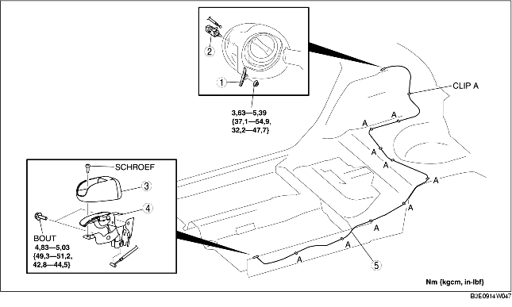

1. Volg onderstaande procedure voor het verwijderen van de ontgrendeling van het tankdopklepje:
2. Verwijder het volgende onderdeel om de ontgrendeling van het tankdopklepje te kunnen verwijderen:
3. Volg onderstaande procedure voor het verwijderen van de ontgrendelkabel van het tankdopklepje:
4. Verwijder de volgende onderdelen:
5. Sla de vloerbedekking gedeeltelijk terug, zodat de ontgrendelkabel kan worden verwijderd.
6. Verwijder de ontgrendelingskabel van het tankdopklepje van de clips A.
7. Verwijder de onderdelen in de aangegeven volgorde, zie de tabel.
8. Plaats de onderdelen in omgekeerde volgorde.

.
|
1
|
Veer
|
|
2
|
Ontgrendeling tankdopklepje
|
|
3
|
Afdekkap hendel ontgrendeling tankdopklepje
|
|
4
|
Hendel ontgrendeling tankdopklepje
|
|
5
|
Ontgrendelingskabel tankdopklepje
|